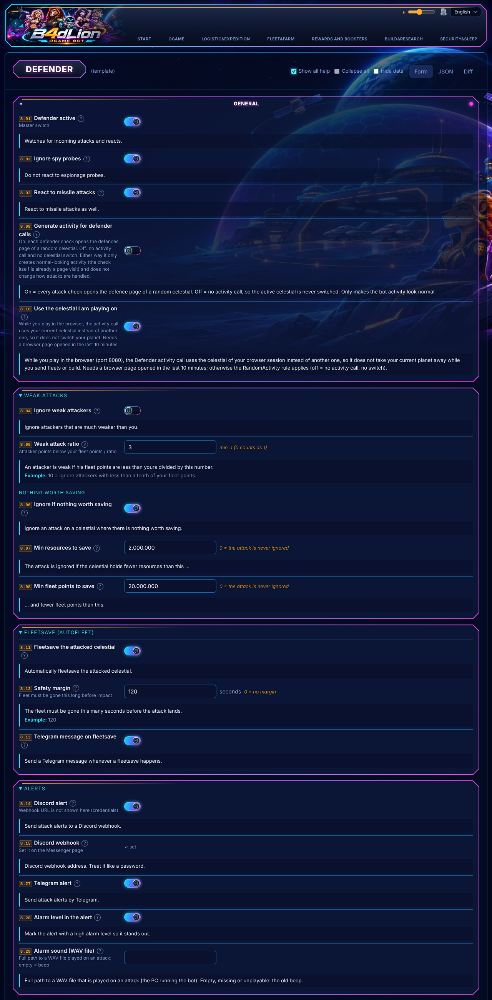

8.001 Defender active Defender.Active
Watches for incoming attacks and reacts.
Defender, sleep mode, GhostSleep and debris protection.

Defender.ActiveWatches for incoming attacks and reacts.
Defender.IgnoreProbesDo not react to espionage probes.
Defender.DefendFromMissilesReact to missile attacks as well.
Defender.RandomActivityOn = every attack check opens the defence page of a random celestial. Off = no activity call, so the active celestial is never switched. Only makes the bot activity look normal.
Defender.CurrentlyActiveCelestialActivityWhile you play in the browser (port 8080), the Defender activity call uses the celestial of your browser session instead of another one, so it does not take your current planet away while you send fleets or build. Needs a browser page opened in the last 10 minutes; otherwise the RandomActivity rule applies (off = no activity call, no switch).
Defender.IgnoreWeakAttackIgnore attackers that are much weaker than you.
Defender.WeakAttackRatioAn attacker is weak if his fleet points are less than yours divided by this number.
Example: 10 = ignore attackers with less than a tenth of your fleet points.
Defender.IgnoreAttackIfIHave.ActiveIgnore an attack on a celestial where there is nothing worth saving.
Defender.IgnoreAttackIfIHave.MinResourcesToSaveThe attack is ignored if the celestial holds fewer resources than this ...
Defender.IgnoreAttackIfIHave.MinFleetToSave... and fewer fleet points than this.
Defender.Autofleet.ActiveAutomatically fleetsave the attacked celestial.
Defender.Autofleet.SafetyMarginSecondsThe fleet must be gone this many seconds before the attack lands.
Example: 120
Defender.Autofleet.TelegramMessenger.ActiveSend a Telegram message whenever a fleetsave happens.
Defender.Discord.ActiveSend attack alerts to a Discord webhook.
Defender.Discord.WebhookUrlDiscord webhook address. Treat it like a password.
Defender.TelegramMessenger.ActiveSend attack alerts by Telegram.
Defender.Alarm.ActiveMark the alert with a high alarm level so it stands out.
Defender.Alarm.SoundFileFull path to a WAV file that is played on an attack (the PC running the bot). Empty, missing or unplayable: the old beep.
Defender.WhiteListPlayer IDs that are never treated as attackers, for example friends or alliance mates.
Defender.SpyAttacker.ActiveSpy the attacker with probes when an attack comes in.
Defender.SpyAttacker.ProbesNumber of probes sent to spy the attacker.
Defender.RaidWarning.ActiveWarn (Telegram, Discord, log) when the same player spies on you several times in a short time. That usually means an attack is being planned.
Defender.RaidWarning.MissionsWarn when the player sends more than this many spy missions.
Defender.RaidWarning.WindowMinutesTime window in minutes. At most one warning per player and window.
Defender.BackfireSpy.ActiveWhen another player spies on you, send your own probes to the same player.
Defender.BackfireSpy.ProbesNumber of probes sent back.
Defender.BackfireSpy.EveryHoursAt most once per player in this many hours.
Defender.MessageAttacker.ActiveSend the attacker a message.
Defender.MessageAttacker.MessagesPossible messages, one per line. The bot sends one of them.
Defender.CheckIntervalMinShortest pause in minutes between two runs of this function.
Defender.CheckIntervalMaxLongest pause in minutes between two runs. The bot picks a random time between minimum and maximum so it does not act like a clock.